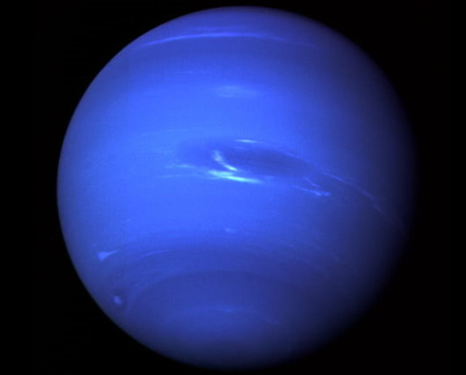

Neptune (30 UA), bien que plus petite qu'Uranus, est légèrement plus massive (17 masses terrestres) et par conséquent plus dense. Elle rayonne plus de chaleur interne, mais pas autant que Jupiter ou Saturne. Neptune possède 13 satellites connus. Le plus grand, Triton, est géologiquement actif et présente des geysers d'azote liquide. Triton est le seul grand satellite placé sur une orbite rétrograde. Sa période de révolution est d'environ 164 ans.